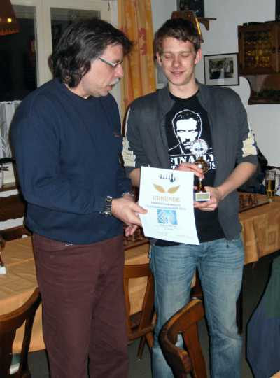
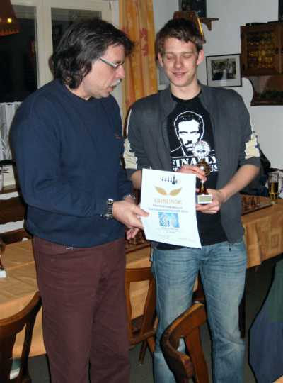
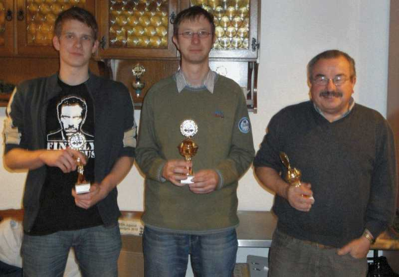
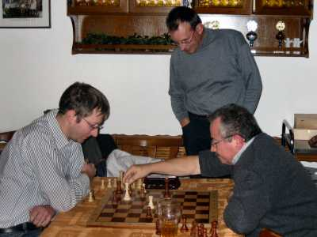
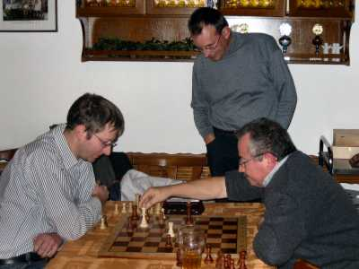
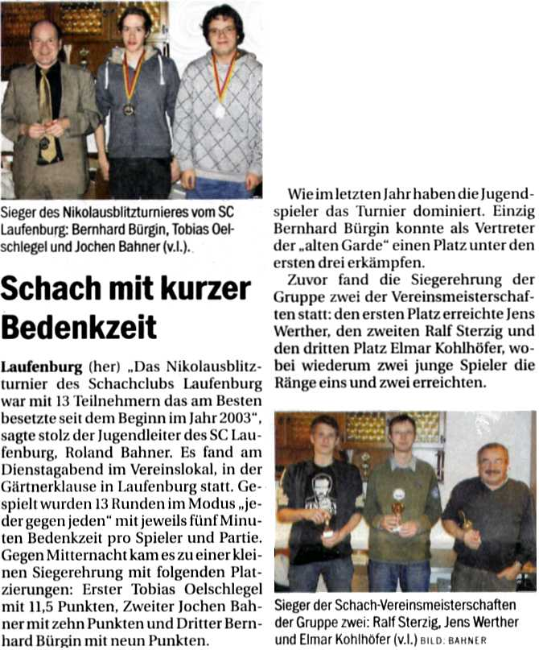

14.12.10
Nikolausblitzturnier
Zu Beginn des offiziellen Teils fand diesmal nicht die Siegerehrung
für das Sommerpokalturnier, sondern für die Gruppe 2 der Vereinsmeisterschaft
statt. Elmar (3. Platz), Rafael (2.) und Jens als Sieger freuten sich über
ihre Auszeichnungen.
 



Hier nochmals als Siegergruppe.

Vorher und hinterher spielten sich die ersten schon mal warm.


Mit 13 Spielern war das Turnier das am stärksten besetzte in der Geschichte.

Auch ein interessierter Zuschauer war anwesend.
 

Benno versuchte verzweifelt, noch etwas dazuzulernen 

Am Schluß standen wieder zwei Jugendspieler auf dem Podest.
Bernhard wurde dritter, Jochen zweiter und Tobias der strahlende Sieger.
Und so berichtete der Südkurier am 16.12.
(Artikel aus Layoutgründen auf zwei Spalten umgebrochen)
:

(aus Rafael Sterzik wurde dieses Mal "Ralf Sterzig"  )
)